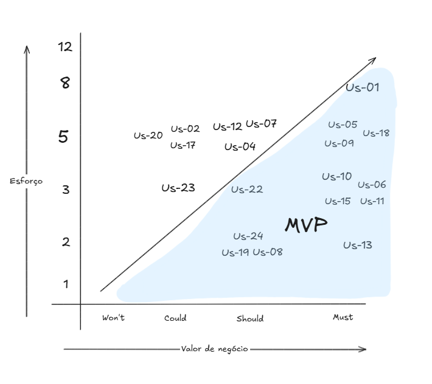

Backlog do Produto
Histórico de Versão:¶
| Data | Versão | Descrição | Autor |
|---|---|---|---|
| 20/05/25 | 1.0 | Criação do Documento | Artur Krauspenhar |
| 24/05/25 | 1.1 | Prioriza backlog | Artur Krauspenhar |
| 26/05/25 | 1.2 | Revisão e correção | Rafael Schadt |
| 08/06/25 | 2.0 | Refatoração completa do backlog | Artur Krauspenhar |
O backlog de produto é uma lista dinâmica e priorizada que contém todos os requisitos, funcionalidades, melhorias e correções que serão necessárias para o desenvolvimento de um produto. Ele funciona como um guia para a equipe de desenvolvimento, servindo de referência para todas as tarefas que precisam ser realizadas ao longo do ciclo de vida do projeto. Essa lista não é fixa, mas sim atualizável conforme o produto evolui e novas necessidades surgem, garantindo que o time esteja sempre alinhado às prioridades e expectativas do projeto.
1 - Requisitos Funcionais¶
| Código | Descrição |
|---|---|
| RF01 | Consultar dados públicos de uma empresa a partir do CNPJ |
| RF02 | Editar dados retornados do CNPJ |
| RF03 | Criar tese tributária |
| RF04 | Editar tese tributária |
| RF05 | Apagar tese tributária |
| RF06 | Criar categorias de teses tributárias |
| RF07 | Visualizar teses tributárias cadastradas |
| RF08 | Criar pergunta jurídica |
| RF09 | Editar pergunta jurídica |
| RF10 | Apagar pergunta jurídica |
| RF11 | Visualizar perguntas jurídicas cadastradas |
| RF12 | Realizar questionário de diagnóstico tributário |
| RF13 | Editar respostas preenchidas no questionário de diagnóstico |
| RF14 | Visualizar relatório de teses tributária aplicáveis |
| RF15 | Apagar questionário de diagnóstico já preenchido |
| RF16 | Exportar relatório de teses aplicáveis em PDF |
| RF17 | Editar categoria de teses tributária |
| RF18 | Apagar categoria de teses tributária |
| RF19 | Visualizar categorias de teses tributária cadastradas |
2 - Requisitos Não Funcionais¶
| Código | Descrição |
|---|---|
| RNF01 | O sistema deve responder a ações do usuário (como cliques em botões, navegação entre telas ou envio de formulários) em até 2 segundos, em rede estável (ping ≤ 200ms, banda ≥ 10 Mbps), medido no navegador do cliente. |
| RNF02 | A geração de relatórios em PDF, como os de teses aplicáveis, deve ser concluída em no máximo 5 segundos. |
| RNF03 | O sistema deve obrigatoriamente usar HTTPS em todas as comunicações. |
| RNF04 | As credenciais dos usuários devem ser protegidas com hash utilizando a biblioteca bcrypt do Node.js. |
| RNF05 | O sistema deve registrar logs contendo: ID do usuário (ou anônimo), IP de origem, endpoint acessado, data/hora, tipo de ação (login, edição, falha, erro), e o código de resposta da requisição. |
| RNF07 | Logs devem ser armazenados no banco de dados (MongoDB) com retenção mínima de 6 meses para fins de auditoria e diagnóstico. |
| RNF08 | Toda comunicação com APIs externas ( BrasilAPI, ReceitaWS ou InfoSimples) deve ocorrer via HTTPS para garantir a integridade e confidencialidade dos dados. |
| RNF09 | Toda a interface textual do sistema (rótulos, mensagens de erro, botões e descrições) deve ser escrita em português correto e estar livre de erros gramaticais e ortográficos, além de evitar termos técnicos de TI como “API”, “payload”, “token” e similares. |
Histórias de Usuário¶
- US-01: Consultar dados públicos de uma empresa a partir do CNPJ
Como usuário, quero visualizar os dados públicos de uma empresa após inserir seu número de CNPJ, para entender melhor o perfil e a situação cadastral da empresa consultada.
- US-02: Editar dados retornados do CNPJ
Como usuário, quero revisar e corrigir manualmente os dados do CNPJ consultado, para garantir que estejam corretos antes de usá-los em um levantamento de teses aplicáveis.
- US-03: Criar tese tributária
Como advogado, quero cadastrar novas teses tributárias no sistema, para ampliar a base de conhecimento jurídico da plataforma.
- US-04: Editar tese tributária
Como advogado, quero editar as teses tributárias já cadastradas, para manter as informações sempre atualizadas e corretas.
- US-05: Excluir tese tributária
Como advogado, quero excluir uma tese tributária do sistema, para remover conteúdos desatualizados ou incorretos.
- US-06: Criar categorias de teses tributárias
Como advogado, quero criar novas categorias para agrupar teses tributárias, para manter a base de dados organizada.
- US-07: Visualizar teses tributárias cadastradas
Como usuário, quero visualizar a lista de teses tributárias cadastradas e poder pesquisar por nome, palavra-chave, ou agrupá-las por categorias para visualizar as teses cadastradas no sistema.
- US-08: Criar pergunta jurídica
Como advogado, quero cadastrar novas perguntas jurídicas com as únicas alternativas “sim”, “não sei” e “não”, para usá-las nos questionários e relacioná-las a teses.
- US-09: Editar pergunta jurídica
Como advogado, quero editar perguntas jurídicas já cadastradas, para ajustar seu conteúdo conforme necessário.
- US-10: Excluir pergunta jurídica
Como advogado, quero excluir perguntas jurídicas do sistema, para remover aquelas que não são mais úteis ou estão desatualizadas.
- US-11: Visualizar perguntas jurídicas cadastradas
Como advogado, quero visualizar todas as perguntas jurídicas cadastradas, para ver as perguntas que irão aparecer no questionário de diagnóstico.
- US-12: Realizar questionário de diagnóstico tributário
Como usuário, quero iniciar um questionário de diagnóstico com as perguntas cadastradas, para fazer um diagnóstico de teses tributárias aplicáveis a uma determinada empresa.
- US-13: Editar respostas preenchidas no questionário de diagnóstico
Como usuário, quero editar as respostas que marquei em um questionário já respondido, para corrigir informações e garantir que o diagnóstico gerado reflita com precisão a situação atual da empresa.
- US-14: Visualizar relatório de teses tributárias aplicáveis
Como usuário, quero visualizar um relatório com as teses tributárias aplicáveis com base em um questionário de diagnóstico respondido, para apoiar a tomada de decisões jurídicas com base nas respostas fornecidas.
- US-15: Apagar questionário de diagnóstico já preenchido
Como usuário, quero apagar um questionário de diagnóstico que já preenchido e foi salvo, para manter meu sistema organizado sem questionários que não serão mais consultados.
- US-16: Exportar relatório de teses aplicáveis em PDF
Como usuário, quero exportar o relatório de teses aplicáveis em formato PDF, para compartilhamento ou impressão.
- US-17: Editar categoria de teses tributária
Como advogado, quero editar o nome de uma categoria de tese tributária, para manter a organização da base de dados e corrigir erros ou padronizar nomenclaturas.
- US-18: Apagar categoria de teses tributária
Como advogado, quero poder apagar uma categoria de tese tributária, para remover agrupamentos que não fazem mais sentido ou foram criados incorretamente.
- US-19: Visualizar categorias de teses tributária cadastradas
Como advogado, quero visualizar uma lista com todas as categorias de teses tributárias cadastradas no sistema, para entender como as teses estão organizadas e facilitar a navegação e o filtro por temas.
Épicos¶
| Código | Título do Épico |
|---|---|
| EP-01 | Gerenciamento de Teses Jurídicas |
| EP-02 | Gerenciamento de Perguntas |
| EP-03 | Gerenciamento de CNPJ |
| EP-04 | Gerenciamento de Diagnóstico Tributário |
| Código US | Código RF | Épico Relacionado |
|---|---|---|
| US-01 | RF01 | EP-03 |
| US-02 | RF03 | EP-03 |
| US-03 | RF04 | EP-01 |
| US-04 | RF05 | EP-01 |
| US-05 | RF06 | EP-01 |
| US-06 | RF07 | EP-01 |
| US-07 | RF09 | EP-01 |
| US-17 | RF18 | EP-01 |
| US-18 | RF19 | EP-01 |
| US-19 | RF20 | EP-01 |
| US-08 | RF10 | EP-02 |
| US-09 | RF08 | EP-02 |
| US-10 | RF03 | EP-02 |
| US-11 | RF12 | EP-02 |
| US-12 | RF13 | EP-04 |
| US-13 | RF14 | EP-04 |
| US-14 | RF15 | EP-04 |
| US-15 | RF16 | EP-04 |
| US-16 | RF17 | EP-04 |
Priorização do Backlog¶
A priorização apresentada foi revisada com base na complexidade estimada e no valor de negócio de cada história de usuário. Para estimar a complexidade, utilizamos Story Points seguindo a sequência de Fibonacci (1, 2, 3, 5, 8, 13...), levando em consideração fatores como esforço técnico, grau de incerteza e impacto funcional.
O valor de negócio foi avaliado em conjunto com o cliente por meio da técnica de priorização MoSCoW (Must have, Should have, Could have, Won’t have), permitindo identificar os requisitos de maior relevância para o negócio.
-
Must have
Funcionalidades essenciais, indispensáveis para o funcionamento mínimo do produto. Sua entrega é obrigatória, pois sem elas o produto não atende aos requisitos básicos de uso ou de negócio. -
Should have
Funcionalidades importantes, que agregam valor significativo ao produto, mas que podem ser implementadas após os itens críticos. Embora não sejam vitais para o funcionamento imediato, sua ausência pode impactar a experiência do usuário ou a eficiência do sistema. -
Could have
Funcionalidades desejáveis, que aumentam a atratividade ou conveniência do produto, mas que não são essenciais no escopo inicial. Podem ser consideradas caso haja tempo ou recursos disponíveis. -
Won't have
Funcionalidades, requisitos ou melhorias que não serão implementados nesta versão do produto. São itens identificados como desejáveis ou interessantes, mas que, após análise com o cliente e a equipe, foram considerados fora do escopo atual devido a restrições de tempo, orçamento, tecnologia ou alinhamento estratégico.
A definição do MVP (Produto Mínimo Viável) foi realizada a partir da combinação entre alto valor de negócio e complexidade viável. Dessa forma, requisitos com alta complexidade e menor valor agregado foram excluídos do escopo do MVP, priorizando entregas com maior retorno e menor esforço de implementação.

| Código US | Descrição | Prioridade | Story Points | MVP |
|---|---|---|---|---|
| US-01 | Consultar dados públicos de uma empresa a partir do CNPJ | Must | 8 | X |
| US-03 | Criar tese tributária | Must | 8 | X |
| US-07 | Visualizar teses tributárias cadastradas | Must | 5 | X |
| US-14 | Visualizar relatório de teses tributária aplicáveis | Must | 5 | X |
| US-04 | Editar tese tributária | Must | 3 | X |
| US-08 | Criar pergunta jurídica | Must | 5 | X |
| US-09 | Editar pergunta jurídica | Must | 3 | X |
| US-12 | Realizar questionário de diagnóstico tributário | Must | 5 | X |
| US-11 | Visualizar perguntas jurídicas cadastradas | Must | 2 | X |
| US-15 | Apagar questionário de diagnóstico já preenchido | Should | 2 | X |
| US-06 | Criar categorias de teses tributárias | Should | 2 | X |
| US-19 | Visualizar categorias de teses tributária cadastradas | Should | 2 | X |
| US-17 | Editar categoria de teses tributária | Should | 3 | X |
| US-05 | Excluir tese tributária | Should | 5 | |
| US-10 | Excluir pergunta jurídica | Should | 5 | |
| US-02 | Editar dados retornados do CNPJ | Could | 5 | |
| US-13 | Editar respostas preenchidas no questionário de diagnóstico | Could | 5 | |
| US-16 | Exportar relatório de teses aplicáveis em PDF | Could | 5 | |
| US-18 | Apagar categoria de teses tributária | Could | 3 |